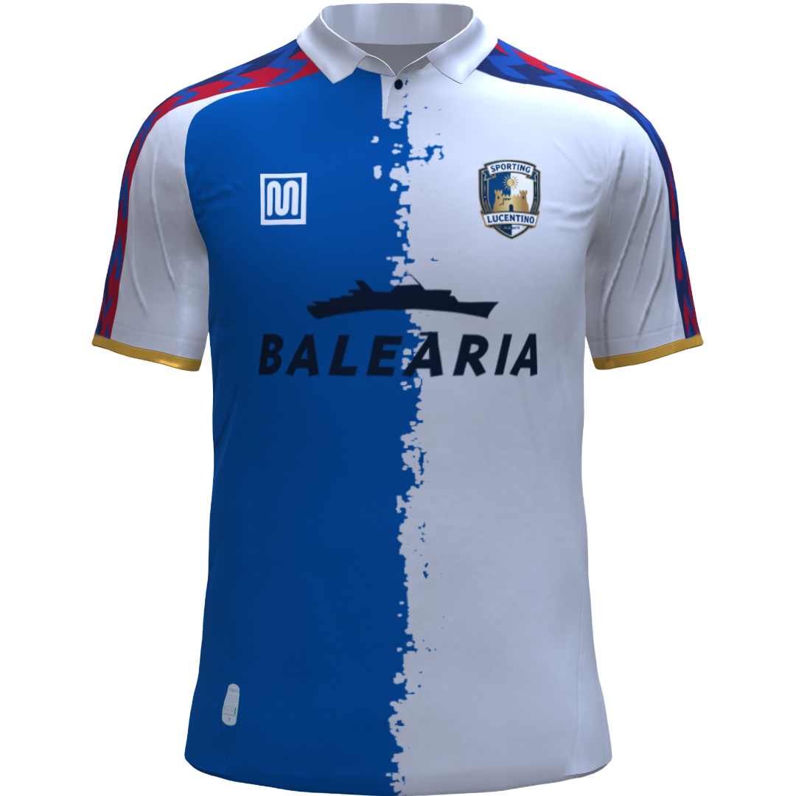
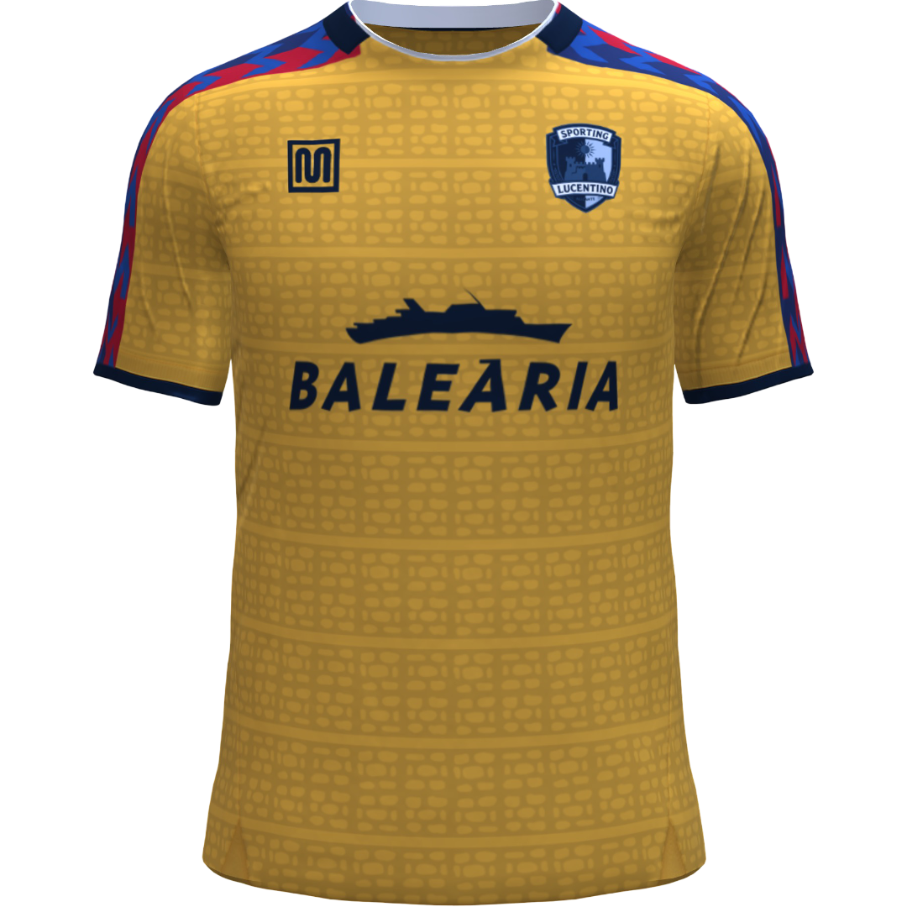
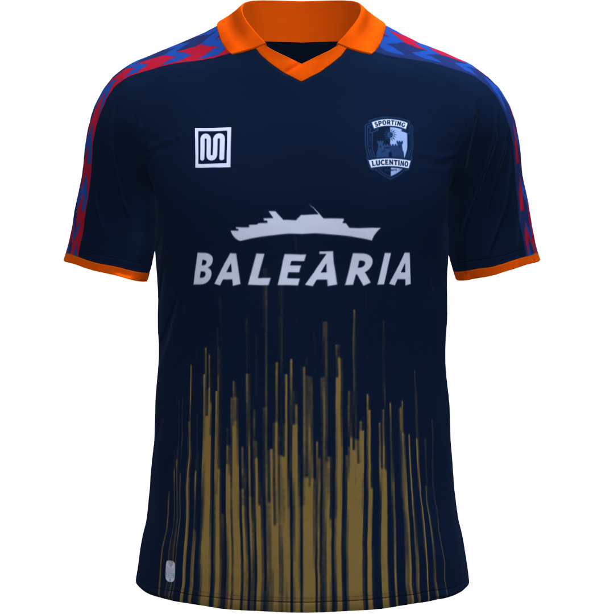

Historia y Evolución del Club
Fundado por marineros, estibadores del puerto y comerciantes de la costa de Alicante que buscaban llevar la pasión del fútbol británico a la fachada mediterránea. Adoptaron el azul y el blanco como reflejo del mar y la espuma de las olas.
Tras décadas compitiendo en el ámbito regional levantino, el club da el salto a la categoría de plata nacional y estrena el vetusto San Gabriel. Se forja el carácter alegre, técnico y vertical del equipo, conocido en el levante como un bloque difícil de superar en su feudo.
El cénit histórico de la entidad. El Sporting Lucentino logra un histórico ascenso a la máxima categoría de la liga, consolidándose durante más de una década en la élite gracias a fichajes de talento sudamericano y una generación dorada de la cantera alicantina. En este periodo alcanzan unas semifinales de copa y llenan San Gabriel cada fin de semana.
Los excesos económicos de principios de siglo arrastraron al club a una situación de concurso de acreedores y descensos administrativos a la categoría de bronce. La masa social se organizó en plataformas de salvación ciudadana para evitar la liquidación, logrando mantener vivo el espíritu democrático del club.
Bajo la presidencia de Vicente Pastor, el club se ha saneado por completo, recuperando la estabilidad institucional y afianzándose como un fijo competitivo en la Liga CaixaBank.
Equipaciones Oficiales

1ª Equipación (Local)
2ª Equipación (Visitante)
3ª Equipación (Alternativa)Clasificación Histórica en Primera División
| Temporadas en Primera | 34 temporadas |
| Partidos jugados | 1.258 |
| Victorias | 445 |
| Empates | 312 |
| Derrotas | 501 |
| Goles a favor (GF) | 1.520 |
| Goles en contra (GC) | 1.685 |
| Diferencia de goles (DG) | -165 |
| Puntos totales históricos | 1.687 puntos |
Plantilla Oficial de la Temporada
- 1Aitor Fornés
- 13Vicent Alcover
- 25Dani Riquelme
- 2Sergio "Checho" Navarro
- 3Marc Giner
- 4Pau Albiol (C)
- 5Borja Moratal
- 12Lucas Pastor
- 18Iker Sanchis
- 22Héctor Esquerdo
- 24Adrián Plaza
- 6Rubén Sivera
- 8Kiko Martí
- 10Enric Cerdà
- 14Joel Candela
- 16David Bernabéu
- 20Adrián Lledó
- 21Miquel Faura
- 23Tono Benet
- 7Joan Llopis
- 9"El Tanque" Rodrigo Moreno
- 11Carlos Fayos
- 15Yago Pastor
- 17Cesc Monzó
- 19Damián Poveda